Basic principle
Photoplethysmography is an optical method to measure blood-volume changes in tissue. An IR LED projects light into the skin, and a photodiode on the opposite side (or the same side) produces a photocurrent depending on the intensity of light transmitted (or reflected) by the tissue. As the heart pumps, blood volume in the tissue changes, causing small periodic variations in the absorbed light giving a waveform called the PPG signal.
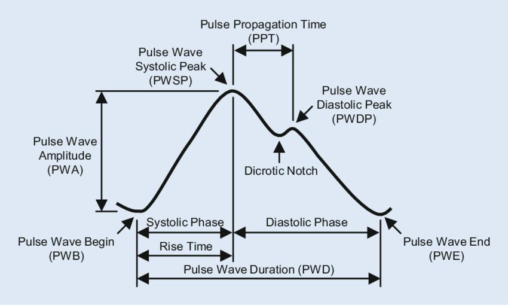
Why the DC component matters
A portion of the emitted light is absorbed by the skin, bones and tissues independent of the heartbeat, creating a large DC baseline. It depends on the thickness and color of the skin, so it varies from person to person. The raw signal from the fingertip is also noisy, so a circuit is needed to acquire and condition it.
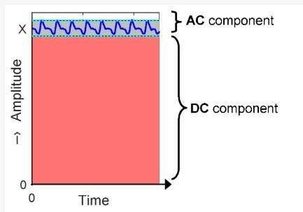
Acquisition modes
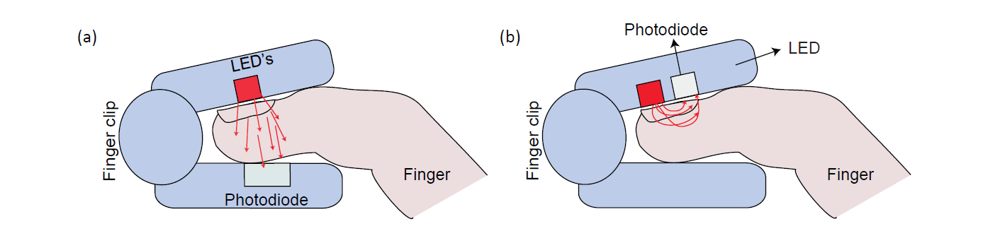
This design uses transmission mode, where the emitter and receiver are on opposite sides of the fingertip.
Acquisition circuit
The EN signal switches the IR LED on, which emits infrared light through the finger. The photodiode produces a photocurrent depending on the intensity of light received from the other side, which depends on the amount of light absorbed by the blood.
Heartbeat-driven changes in blood volume cause small periodic variations in the photocurrent. This forms the raw PPG signal.
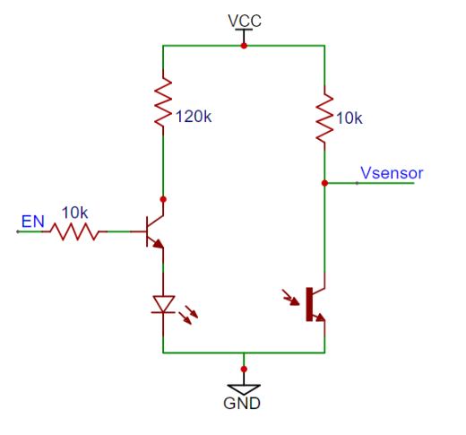
Conditioning circuit
The useful signal lies between 0.5 Hz and 8 Hz, on top of a large unwanted DC component. A two-stage band-pass active filter amplifies the AC component and attenuates the DC component and unwanted frequencies.
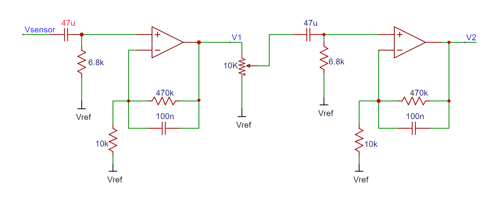
Design decisions
Results
Raw vs. filtered signal
CH1 shows the filtered signal and CH2 the raw signal (on different voltage scales in each figure). The raw signal is dominated by its DC component, while the filtered signal shows the amplified pulsatile AC component.
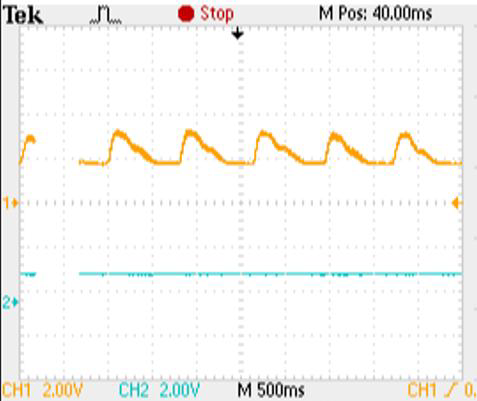
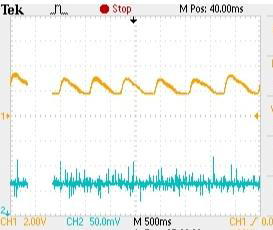
User-specific data
Data from two different users shows the difference in AC amplitude. Without proper potentiometer tuning, higher amplitude can saturate the op-amp and lose useful information like peaks.
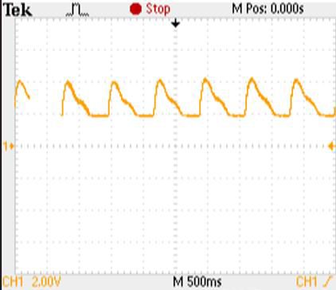
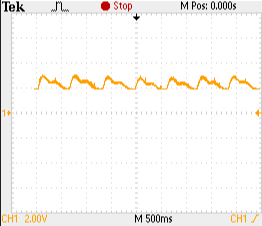
Heart rate estimation
Heart rate was estimated two independent ways, and both give approximately 85 bpm.
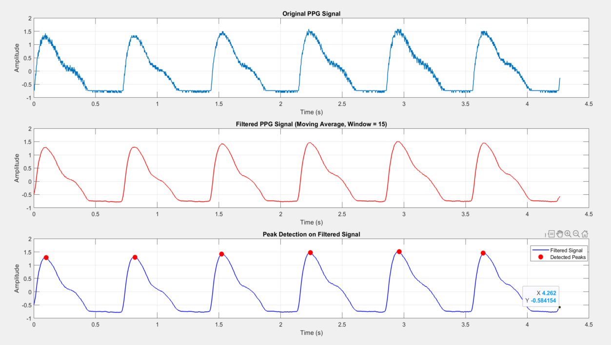
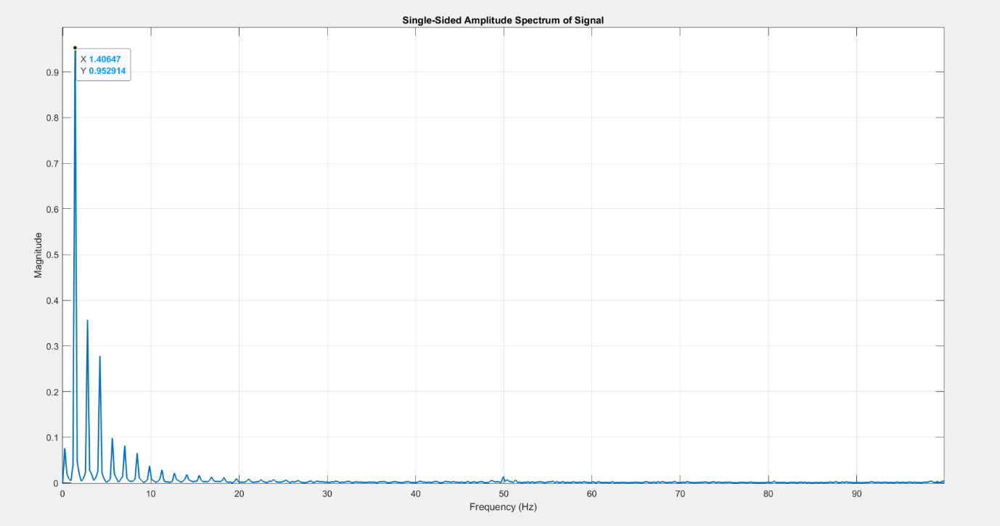
Future scope
- Test this circuit on more users to ensure the robustness of the conditioning circuit.
- Miniaturize the circuit into a wearable signal conditioning circuit powered by a body-heat based energy harvester.
References
- E. Mejía-Mejía, J. Allen, K. Budidha, C. El-Hajj, P. A. Kyriacou, P. H. Charlton. Photoplethysmography Signal Processing and Synthesis, Chapters 2 and 3.
- R. Wang, W. Jia, Z.-H. Mao, R. J. Sclabassi, M. Sun. Cuff-Free Blood Pressure Estimation Using Pulse Transit Time and Heart Rate.
- S. Sun, E. Bresch, J. Muehlsteff, L. Schmitt, X. Long, R. Bezemer, I. Paulussen, G. J. Noordergraaf, R. M. Aarts. Systolic blood pressure estimation using ECG and PPG in patients undergoing surgery.